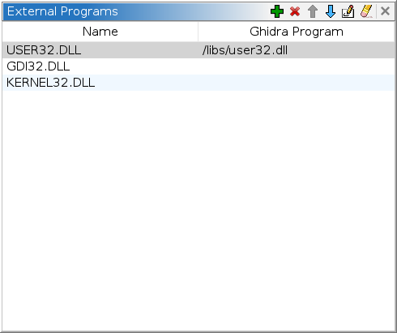
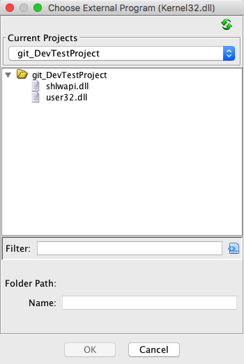

External Program Names
An external location identifies an external function or data dependency
associated with a named Library (i.e., External Program). One or more external references may refer to
a single external location. Thunk functions within a Program may also refer to an external
location if it corresponds to a function. Each Library defined within Ghidra can optionally
be associated with another Program file within the Ghidra project.
There is a reserved
Library named <EXTERNAL> which is a holding area for external locations whose
associated Library is unknown (commonly used by ELF Imports).
The External Symbol Resolver analyzer can be used to search
for these external locations among the ordered list of Libraries which have a Program file association.
The ordered Library sequence dictates the order that this analyzer searches through them.
To navigate on an external reference/location, or resolve external locations, the
external Library name must be associated with an existing Program file in the same project.
If a Library's Program association has been specified, then any related
external reference is said to have been resolved.
The External Programs view manages the associations
between external Library names and Program files as well as the ordered Library sequence.
Use the External Programs view to add/delete external Library names,
set/clear Program associations and adjust search order using up/down placement actions.
Other than the up/down ordering functionality, the
Symbol Tree Imports node provides
similar actions plus the ability to navigate.
 The term "External Program" within Ghidra
is used interchangeably with the term "Library" and represents a dependency. Each defined
Library has a corresponding Library Symbol within a program's symbol table and may have related
external locations.
The term "External Program" within Ghidra
is used interchangeably with the term "Library" and represents a dependency. Each defined
Library has a corresponding Library Symbol within a program's symbol table and may have related
external locations.
External Programs View

The External Programs view consists of a main scrollable list of external Library
names and their associated Ghidra program files.
Name Column
The name of the external Library. Many external function and/or data locations will
correspond to the same external Library within a Ghidra program which are considered to
be Imports.
The name used within the current program to identify the Library may be
changed. To do this, double-click on the Name to enter edit mode. After you change
the name, press <Enter> to commit the change.
Ghidra Program Column
The Ghidra program file associated with the external Library name. This field is blank if
the external Library has not been resolved. Ghidra will not be able to "follow" an external
location reference into a Library, or search for external symbols within a Library,
if a Library does not have a Ghidra program file association.
See Set External Path Association for changing the
path shown.
Add Button
The Add button will bring up a text dialog
for entering a new external program name.
Delete External Name Button
The Delete button deletes the selected external Library names from the
program. If a selected external Library name has associated external locations, it can
not be deleted. The Delete button is enabled
whenever one or more rows are selected.
Move Library Up Button
The Up  button will shift a selected external Library up
within the list of Libraries thus increasing its priority when used to
search for external symbols. The Up
button is enabled whenever one external program name is selected and can be moved
up within the Library list.
button will shift a selected external Library up
within the list of Libraries thus increasing its priority when used to
search for external symbols. The Up
button is enabled whenever one external program name is selected and can be moved
up within the Library list.
Move Library Down Button
The Down  button will shift a selected external Library down
within the list of Libraries thus reducing its priority when used to
search for external symbols. The Down
button is enabled whenever one external program name is selected and can be moved
down within the Library list.
button will shift a selected external Library down
within the list of Libraries thus reducing its priority when used to
search for external symbols. The Down
button is enabled whenever one external program name is selected and can be moved
down within the Library list.
Set
External Path Association Button
The Set button brings up a Ghidra program chooser dialog. Choose a
Ghidra program file to associate it with the selected external Library name. This button
is only enabled when a single external program name is selected.

Clear External Path Association
Button
The Clear  button clears the associated program path for all the
selected rows.
button clears the associated program path for all the
selected rows.
Working with External Program Names
Adding a New External Program Name
- Select Window
 External Programs
from the main Code Browser menu.
External Programs
from the main Code Browser menu.
- Press the Add button.
- Enter the new external program name into the pop-up dialog.
Any new External Program added
will be placed at the bottom of the list. If relying on external symbol resolution
analysis and the library search order is important, the new entry may be moved up
in the list using the Up button.
Resolving an External Name to an existing Ghidra program
- Select Window External Programs from the main Code Browser
menu.
- Click on the external program name that is be associated with a Ghidra program
file.
- Press the Edit button.
- Use the Ghidra Program Chooser dialog to
select the Ghidra file to associate to the selected program name.
- The Code Browser updates to indicate that the external reference has been resolved.
(Unresolved references are shown in red.)
Clearing a Resolved External Program Name
- Select Window External Programs from the main Code Browser
menu.
- Click on the external program name that has an association to be cleared.
- Press the Clear button
Removing an External Program Name
- Select Window External Programs from the main Code Browser
menu.
- Click on the external program name to be removed.
-
Press the Delete button.
- If external references still exist, a dialog is displayed indicating that the
external program name cannot be deleted. All external references to that external program name must be deleted before it can
be deleted.
Provided by: References Plugin
Related Topics: